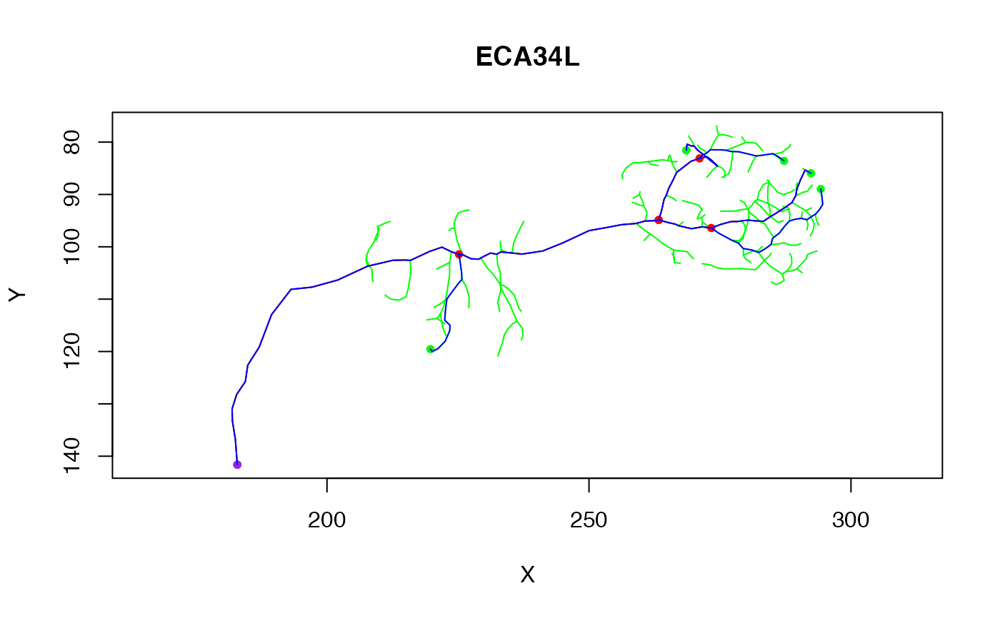
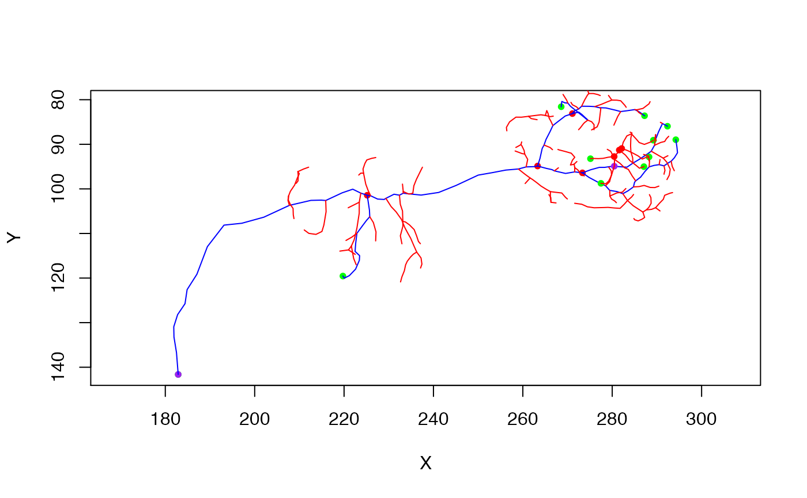

Simplify a neuron to the longest tree with n branch points
simplify_neuron(x, n = 1, invert = FALSE, ...)A neuron to simplify
Required number of branch points (default=1, minimum 0)
Whether to keep the simplified backbone (when
invert=FALSE, the default) or its inverse.
Additional arguments (currently ignored)
The simplified neuron or the untouched original neuron for
neurons that have <=n branch points.
If the neuron already contains fewer than or exactly the requested number of branches, then the original neuron is returned. The approach is to build up the new neuron starting from the longest tree including no branches all the way up to the longest tree containing n branches. The distance calculations are only carried out once so it should be reasonably efficient. Nevertheless at each iteration, the longest path from the tree so far to the newly selected leaf is calculated and it is likely that this step could be avoided. Furthermore for large values of n, pruning excess branches rather than building would presumably be more efficient.
# \donttest{
n=Cell07PNs[['ECA34L']]
n.simp=simplify_neuron(n)
n.simp4=simplify_neuron(n, n=4)
plot(n, col='green', WithNodes = FALSE)
plot(n.simp, col='red', add = TRUE)
plot(n.simp4, col='blue', add = TRUE)

# calculate the inverse as well
n.simp4.inv=simplify_neuron(n, n=4, invert=TRUE)
plot(n.simp4, col='blue')
plot(n.simp4.inv, col='red', add = TRUE)

# }
# 3D plots
if (FALSE) {
nclear3d()
plot3d(n.simp, col='red', add = TRUE)
plot3d(n.simp4, col='blue', add = TRUE)
plot3d(n, col='green', WithNodes = FALSE)
}
# or with plotly where transparency works
if (FALSE) {
op <- options(nat.plotengine = 'plotly')
nclear3d()
plot3d(n.simp, col='red', alpha = 0.5, add = TRUE)
plot3d(n.simp4, col='blue', alpha = 0.5, add = TRUE)
plot3d(n, col='green', alpha = 0.5, WithNodes = FALSE)
}